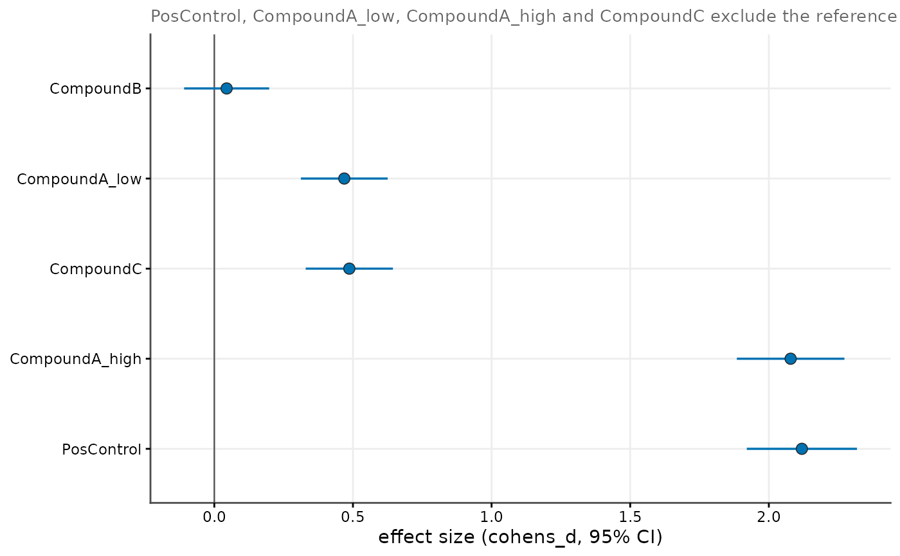

Forest plot of effect sizes
Arguments
- results
A single
cr_result, a list ofcr_results (fromcr_test_all()) or a precomputed tibble with columnstreatment,method,estimate,ci_low,ci_high.- method
Effect-size method to plot (default
"cohens_d").
Examples
# \donttest{
exp <- cr_example_experiment(seed = 1, n_cells_per_well = 20)
all_res <- cr_test_all(exp, "marker_1", "Untreated", level = "replicate")
cr_plot_effect_sizes(all_res)

# }